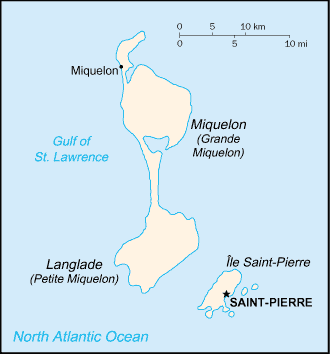
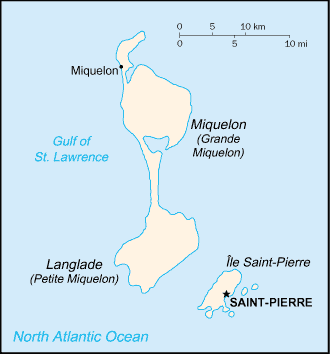

-
Introduction :: Saint Pierre and Miquelon
-
Background:First settled by the French in the early 17th century, the islands represent the sole remaining vestige of France's once vast North American possessions. They attained the status of an overseas collectivity in 2003.
-
Geography :: Saint Pierre and Miquelon
-
Location:Northern North America, islands in the North Atlantic Ocean, south of Newfoundland (Canada)Geographic coordinates:46 50 N, 56 20 WMap references:North AmericaArea:total: 242 sq kmland: 242 sq kmwater: 0 sq km
note: includes eight small islands in the Saint Pierre and the Miquelon groups
country comparison to the world: 214Area - comparative:one and half times the size of Washington, DCLand boundaries:0 kmCoastline:120 kmMaritime claims:territorial sea: 12 nmexclusive economic zone: 200 nmClimate:cold and wet, with considerable mist and fog; spring and autumn are often windyTerrain:mostly barren rockElevation:0 m lowest point: Atlantic Ocean240 highest point: Morne de la Grande MontagneNatural resources:fish, deepwater portsLand use:agricultural land: 8.7% (2011 est.)arable land: 8.7% (2011 est.) / permanent crops: 0% (2011 est.) / permanent pasture: 0% (2011 est.)forest: 12.5% (2011 est.)other: 78.8% (2011 est.)Irrigated land:0 sq km (2012)Population distribution:most of the population is found on Saint Pierre Island; a small settlement is located on the north end of Miquelon IslandNatural hazards:persistent fog throughout the year can be a maritime hazardEnvironment - current issues:overfishing; recent test drilling for oil in waters around Saint Pierre and Miquelon may bring future development that would impact the environmentGeography - note:vegetation scanty; the islands are actually part of the northern Appalachians along with Newfoundland -
People and Society :: Saint Pierre and Miquelon
-
Population:5,471 (July 2018 est.)country comparison to the world: 227Nationality:noun: Frenchman(men), Frenchwoman(women)adjective: FrenchEthnic groups:Basques and Bretons (French fishermen)Languages:French (official)Religions:Roman Catholic 99%, other 1%Age structure:0-14 years: 14.88% (male 420 /female 394)15-24 years: 8.99% (male 255 /female 237)25-54 years: 41.44% (male 1,109 /female 1,158)55-64 years: 13.69% (male 389 /female 360)65 years and over: 21% (male 489 /female 660) (2018 est.)population pyramid:
 The World Factbook Field Image ModalNorth America :: Saint Pierre and Miquelon Print
The World Factbook Field Image ModalNorth America :: Saint Pierre and Miquelon Print Image DescriptionThis is the population pyramid for Saint Pierre and Miquelon. A population pyramid illustrates the age and sex structure of a country's population and may provide insights about political and social stability, as well as economic development. The population is distributed along the horizontal axis, with males shown on the left and females on the right. The male and female populations are broken down into 5-year age groups represented as horizontal bars along the vertical axis, with the youngest age groups at the bottom and the oldest at the top. The shape of the population pyramid gradually evolves over time based on fertility, mortality, and international migration trends.
Image DescriptionThis is the population pyramid for Saint Pierre and Miquelon. A population pyramid illustrates the age and sex structure of a country's population and may provide insights about political and social stability, as well as economic development. The population is distributed along the horizontal axis, with males shown on the left and females on the right. The male and female populations are broken down into 5-year age groups represented as horizontal bars along the vertical axis, with the youngest age groups at the bottom and the oldest at the top. The shape of the population pyramid gradually evolves over time based on fertility, mortality, and international migration trends.
For additional information, please see the entry for Population pyramid on the Definitions and Notes page under the References tab.Median age:total: 47.2 yearsmale: 46.7 yearsfemale: 47.7 years (2018 est.)country comparison to the world: 4Population growth rate:-1.13% (2018 est.)country comparison to the world: 229Birth rate:7 births/1,000 population (2018 est.)country comparison to the world: 225Death rate:10.2 deaths/1,000 population (2018 est.)country comparison to the world: 32Net migration rate:-8 migrant(s)/1,000 population (2017 est.)country comparison to the world: 206Population distribution:most of the population is found on Saint Pierre Island; a small settlement is located on the north end of Miquelon IslandUrbanization:urban population: 90.2% of total population (2018)rate of urbanization: 0.36% annual rate of change (2015-20 est.)Major urban areas - population:6,000 SAINT-PIERRE (capital) (2018)Sex ratio:at birth: 1.11 male(s)/female (2017 est.)0-14 years: 1.06 male(s)/female (2017 est.)15-24 years: 1.08 male(s)/female (2017 est.)25-54 years: 0.97 male(s)/female (2017 est.)55-64 years: 1.1 male(s)/female (2017 est.)65 years and over: 0.72 male(s)/female (2017 est.)total population: 0.95 male(s)/female (2017 est.)Infant mortality rate:total: 6.4 deaths/1,000 live births (2018 est.)male: 7.4 deaths/1,000 live births (2018 est.)female: 5.3 deaths/1,000 live births (2018 est.)country comparison to the world: 164Life expectancy at birth:total population: 80.7 years (2018 est.)male: 78.4 years (2018 est.)female: 83.2 years (2018 est.)country comparison to the world: 41Total fertility rate:1.57 children born/woman (2018 est.)country comparison to the world: 188HIV/AIDS - adult prevalence rate:NAHIV/AIDS - people living with HIV/AIDS:NAHIV/AIDS - deaths:NA -
Government :: Saint Pierre and Miquelon
-
Country name:conventional long form: Territorial Collectivity of Saint Pierre and Miquelonconventional short form: Saint Pierre and Miquelonlocal long form: Departement de Saint-Pierre et Miquelonlocal short form: Saint-Pierre et Miquelonetymology: Saint-Pierre is named after Saint PETER, the patron saint of fishermen; Miquelon may be a corruption of the Basque name MikelonDependency status:overseas collectivity of FranceGovernment type:parliamentary democracy (Territorial Council); overseas collectivity of FranceCapital:name: Saint-Pierregeographic coordinates: 46 46 N, 56 11 Wtime difference: UTC-3 (2 hours ahead of Washington, DC, during Standard Time)daylight saving time: +1hr, begins second Sunday in March; ends first Sunday in NovemberAdministrative divisions:none (territorial overseas collectivity of France); note - there are no first-order administrative divisions as defined by the US Government, but there are 2 communes at the second order - Saint Pierre, MiquelonIndependence:none (overseas collectivity collectivity of France; has been under French control since 1763)National holiday:Fete de la Federation, 14 July (1790)Constitution:history: 4 October 1958 (French Constitution) (2018)amendments: amendment procedures of France's constitution apply (2018)Legal system:French civil lawCitizenship:see FranceSuffrage:18 years of age; universalJudicial branch:highest courts: Superior Tribunal of Appeals or Tribunal Superieur d'Appel (composition NA)judge selection and term of office: judge selection and tenure NAsubordinate courts: NAExecutive branch:chief of state: President Emmanuel MACRON (since 14 May 2017); represented by Prefect Thierry DEVIMEUX (since 17 January 2018)head of government: President of Territorial Council Stephane LENORMAND (since 24 October 2017)cabinet: Le Cabinet du Prefetelections/appointments: French president directly elected by absolute majority popular vote in 2 rounds if needed for a 5-year term (eligible for a second term); election last held on 23 April and 6 May 2017 (next to be held in 2022); prefect appointed by French president on the advice of French Ministry of InteriorLegislative branch:description: unicameral Territorial Council or Conseil Territorial (19 seats - Saint Pierre 15, Miquelon 4; members directly elected in single-seat constituencies by absolute majority vote in 2 rounds if needed to serve 6-year terms);
Saint Pierre and Miquelon indirectly elects 1 senator to the French Senate by an electoral college to serve a 6-year term and directly elects 1 deputy to the French National Assembly by absolute majority vote to serve a 5-year termelections: Territorial Council - last held on 19 March 2017 (next to be held in March 2023)
French Senate - last held on 28 September 2014 (next to be held no later than September 2020)
French National Assembly - last held on 17 June 2012 (next to be held by June 2017)election results: Territorial Council - percent of vote by party - AD 70.2%, Cap sur l'Avenir 29.8%; seats by party - AD 17, Cap sur l'Avenir 2
French Senate - percent of vote by party - NA; seats by party - AD 1 (affiliated with UMP)
French National Assembly - percent of vote by party - NA; seats by party - Ensemble pour l'Avenir 1 (affiliated with PRG)Political parties and leaders:Archipelago Tomorrow or AD (affiliated with UMP)
Cap sur l'Avenir [Annick GIRARDIN] (affiliated with Left Radical Party)
Togerther for the Future (Ensemble pour l'Avenir) (affiliated with PRG)SPM ensembleInternational organization participation:UPU, WFTU (NGOs)Diplomatic representation in the US:none (territorial overseas collectivity of France)Diplomatic representation from the US:none (territorial overseas collectivity of France)Flag description:a yellow three-masted sailing ship facing the hoist side rides on a blue background with scattered, white, wavy lines under the ship; a continuous black-over-white wavy line divides the ship from the white wavy lines; on the hoist side, a vertical band is divided into three parts: the top part (called ikkurina) is red with a green diagonal cross extending to the corners overlaid by a white cross dividing the rectangle into four sections; the middle part has a white background with an ermine pattern; the third part has a red background with two stylized yellow lions outlined in black, one above the other; these three heraldic arms represent settlement by colonists from the Basque Country (top), Brittany, and Normandy; the blue on the main portion of the flag symbolizes the Atlantic Ocean and the stylized ship represents the Grande Hermine in which Jacques Cartier "discovered" the islands in 1536note: the flag of France used for official occasions
National symbol(s):16th-century sailing shipNational anthem:note: as a collectivity of France, "La Marseillaise" is official (see France)
-
Economy :: Saint Pierre and Miquelon
-
Economy - overview:
The inhabitants have traditionally earned their livelihood by fishing and by servicing fishing fleets operating off the coast of Newfoundland. The economy has been declining, however, because of disputes with Canada over fishing quotas and a steady decline in the number of ships stopping at Saint Pierre. The services sector accounted for 86% of GDP in 2010, the last year data is available for. Government employment accounts for than 46% of the GDP, and 78% of the population is working age.
The government hopes an expansion of tourism will boost economic prospects. Fish farming, crab fishing, and agriculture are being developed to diversify the local economy. Recent test drilling for oil may pave the way for development of the energy sector. Trade is the second largest sector in terms of value added created, where it contributes significantly to economic activity. The extractive industries and energy sector is the third largest sector of activity in the archipelago, attributable in part to the construction of a new thermal power plant in 2015.
GDP (purchasing power parity):$261.3 million (2015 est.)$215.3 million (2006 est.)note: supplemented by annual payments from France of about $60 million
country comparison to the world: 218GDP (official exchange rate):$261.3 million (2015 est.) (2015 est.)GDP - real growth rate:NA
GDP - per capita (PPP):$46,200 (2006 est.)$34,900 (2005)country comparison to the world: 36GDP - composition, by sector of origin:agriculture: 2% (2006 est.)industry: 15% (2006 est.)services: 83% (2006 est.)Agriculture - products:vegetables; poultry, cattle, sheep, pigs; fishIndustries:fish processing and supply base for fishing fleets; tourismIndustrial production growth rate:NALabor force:4,429 (2015)country comparison to the world: 224Labor force - by occupation:agriculture: 18%industry: 41%services: 41% (1996 est.)Unemployment rate:8.7% (2015 est.)9.9% (2008 est.)country comparison to the world: 125Population below poverty line:NABudget:revenues: 70 million (1996 est.)expenditures: 60 million (1996 est.)Taxes and other revenues:26.8% (of GDP) (1996 est.)country comparison to the world: 104Budget surplus (+) or deficit (-):3.8% (of GDP) (1996 est.)country comparison to the world: 10Fiscal year:calendar yearInflation rate (consumer prices):1.5% (2015)4.5% (2010)country comparison to the world: 85Exports:$6.641 million (2010 est.)$5.5 million (2005 est.)country comparison to the world: 217Exports - commodities:fish and fish products, soybeans, animal feed, mollusks and crustaceans, fox and mink peltsImports:$95.35 million (2010 est.)$68.2 million (2005 est.)country comparison to the world: 216Imports - commodities:meat, clothing, fuel, electrical equipment, machinery, building materialsDebt - external:NA
Exchange rates:euros (EUR) per US dollar -0.885 (2017 est.)0.903 (2016 est.)0.9214 (2015 est.)0.885 (2014 est.)0.7634 (2013 est.) -
Energy :: Saint Pierre and Miquelon
-
Electricity - production:46 million kWh (2016 est.)country comparison to the world: 206Electricity - consumption:42.78 million kWh (2016 est.)country comparison to the world: 206Electricity - exports:0 kWh (2016 est.)country comparison to the world: 190Electricity - imports:0 kWh (2016 est.)country comparison to the world: 192Electricity - installed generating capacity:27,600 kW (2016 est.)country comparison to the world: 202Electricity - from fossil fuels:96% of total installed capacity (2016 est.)country comparison to the world: 42Electricity - from nuclear fuels:0% of total installed capacity (2017 est.)country comparison to the world: 174Electricity - from hydroelectric plants:0% of total installed capacity (2017 est.)country comparison to the world: 197Electricity - from other renewable sources:4% of total installed capacity (2017 est.)country comparison to the world: 118Crude oil - production:0 bbl/day (2017 est.)country comparison to the world: 192Crude oil - exports:0 bbl/day (2015 est.)country comparison to the world: 186Crude oil - imports:0 bbl/day (2015 est.)country comparison to the world: 188Crude oil - proved reserves:0 bbl (1 January 2018 est.)country comparison to the world: 188Refined petroleum products - production:0 bbl/day (2015 est.)country comparison to the world: 195Refined petroleum products - consumption:660 bbl/day (2016 est.)country comparison to the world: 208Refined petroleum products - exports:0 bbl/day (2015 est.)country comparison to the world: 196Refined petroleum products - imports:650 bbl/day (2015 est.)country comparison to the world: 204Natural gas - production:0 cu m (2017 est.)country comparison to the world: 190Natural gas - consumption:0 cu m (2017 est.)country comparison to the world: 192Natural gas - exports:0 cu m (2017 est.)country comparison to the world: 175Natural gas - imports:0 cu m (2017 est.)country comparison to the world: 181Natural gas - proved reserves:0 cu m (1 January 2014 est.)country comparison to the world: 187Carbon dioxide emissions from consumption of energy:100,200 Mt (2017 est.)country comparison to the world: 206
-
Communications :: Saint Pierre and Miquelon
-
Telephones - fixed lines:total subscriptions: 4,800 (July 2016 est.)subscriptions per 100 inhabitants: 80 (July 2016 est.)country comparison to the world: 206Telephone system:general assessment: adequateinternational: country code - 508; radiotelephone communication with most countries in the world; satellite earth station - 1 in French domestic satellite systemBroadcast media:2 TV stations with a third repeater station, all part of the French Overseas Network; radio stations on St. Pierre and on Miquelon are part of the French Overseas Network (2007)Internet country code:.pmInternet users:total: 4,500 (July 2016 est.)percent of population: 79.5% (July 2016 est.)country comparison to the world: 216
-
Transportation :: Saint Pierre and Miquelon
-
Airports:2 (2013)country comparison to the world: 206Airports - with paved runways:total: 2 (2017)1,524 to 2,437 m: 1 (2017)914 to 1,523 m: 1 (2017)Roadways:total: 117 km (2009)paved: 80 km (2009)unpaved: 37 km (2009)country comparison to the world: 215Ports and terminals:major seaport(s): Saint-Pierre
-
Military and Security :: Saint Pierre and Miquelon
-
Military - note:defense is the responsibility of France
-
Transnational Issues :: Saint Pierre and Miquelon
-
Disputes - international:none
North America ::
Saint Pierre and Miquelon